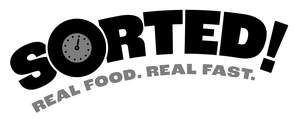

Trade Mark Journal No.2025/017 25 April 2025
UK00004186087 8 April 2025 (29,30)

- Class 29
- Ready cooked meals consisting primarily of meat; Ready cooked meals consisting primarily of chicken; Ready cooked meals consisting primarily of poultry; Prepared salads; Prepared meat dishes; Prepared meat; Prepared meals made from meat [meat predominating]; Prepared vegetable dishes; Prepared fish dishes; Vegetables (Prepared); Prepared meals consisting substantially of seafood; Prepared beef; Chilled meals made from fish; Prepared meals containing [principally] chicken; Prepared meals consisting primarily of turkey; Ready cooked meals consisting wholly or substantially wholly of meat; Prepared meals consisting primarily of chicken; Ready cooked meals consisting wholly or substantially wholly of game; Prepared meals consisting primarily of meat; Foods prepared from fish; Prepared meals containing [principally] bacon; Ready cooked meals consisting wholly or substantially wholly of poultry; Prepared meals consisting primarily of kebab; Prepared meals consisting primarily of fish; Prepared meals consisting primarily of meat substitutes; Prepared meals containing [principally] eggs; Prepared peppers; Prepared meals consisting primarily of vegetables; Frozen prepared meals consisting principally of vegetables; Prepared meals consisting primarily of duck; Mushrooms, prepared; Prepared meals consisting principally of vegetables; Prepared meals consisting principally of game; Prepared meals made from poultry [poultry predominating]; Cooked meat dishes; Prepared meals consisting primarily of poultry; Meat-based snack food; Fish-based snack food; Vegetable-based snack food; Frozen meals consisting primarily of chicken; Frozen meals consisting primarily of fish; Frozen meals consisting primarily of meat; Frozen meals consisting primarily of vegetables; Frozen meals consisting primarily of poultry; Ready cooked meals consisting primarily of turkey; Meat; Fish; Poultry; Game; Potato fries; Mashed potato; Boiled potatoes.
- Class 30
- Burritos; Tacos; Enchiladas; Quesadillas; Fajitas; Macaroni with cheese; Empanadas; Frozen pizza; Lasagna; Quiche; Meat pies; Prepared meals containing [principally] pasta; Prepared meals consisting primarily of rice; Prepared meals containing [principally] rice; Pasta-based prepared meals; Rice-based prepared meals; Prepared meals consisting primarily of pasta; Frozen meals consisting primarily of pasta; Frozen meals consisting primarily of rice; Dry and liquid ready-to-serve meals, mainly consisting of pasta; Dry and liquid ready-to-serve meals, mainly consisting of rice; Wrap sandwiches; Pasta; Pasta dishes; Prepared pasta; Meals consisting primarily of pasta; Snack foods consisting principally of pasta; Sandwiches; Filled sandwiches; Toasted sandwiches; Hamburger sandwiches; Cheeseburgers [sandwiches]; Snack food products made from rice; Prepared pizza meals; Noodle-based prepared meals; Prepared meals in the form of pizzas; Prepared rice dishes; Pizza; .
Quality Irish Food Ltd
Quality Irish Food Ltd